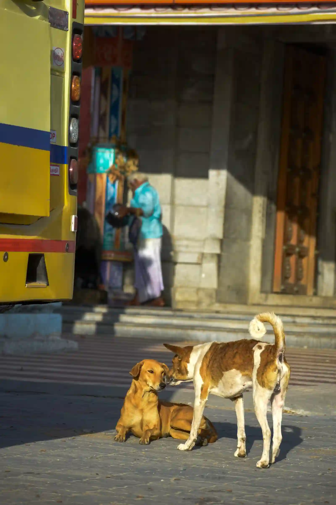
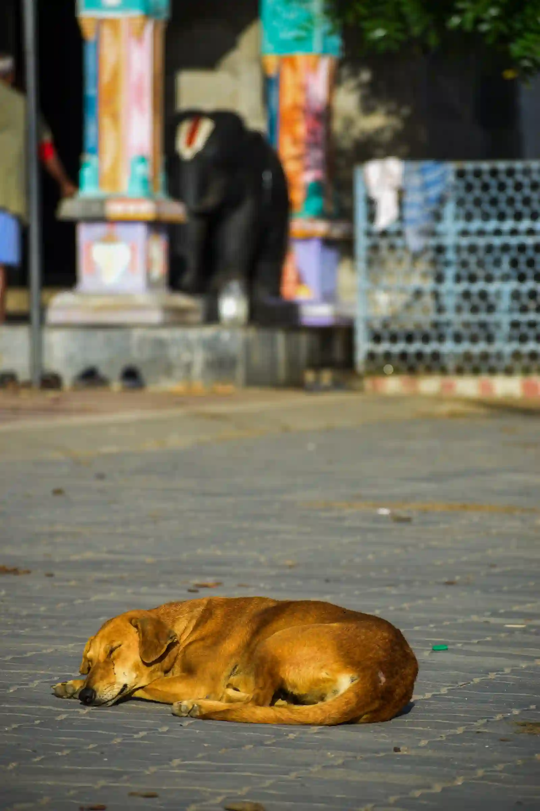
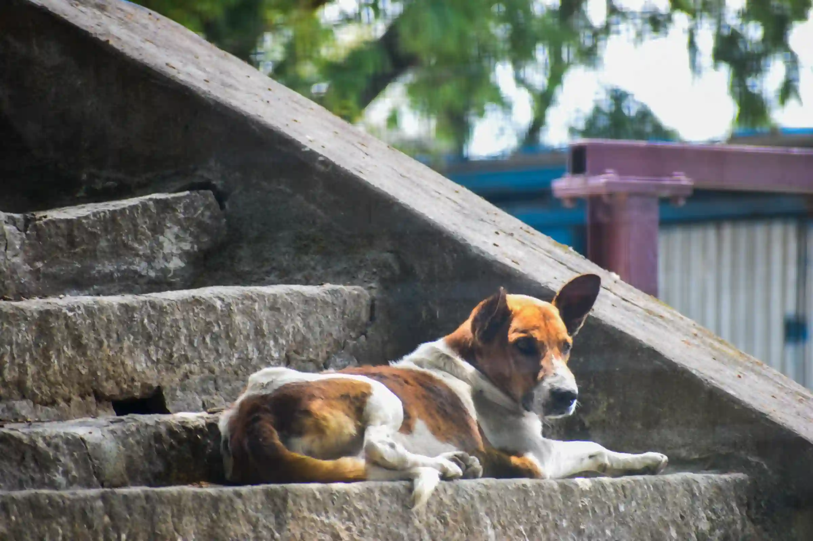
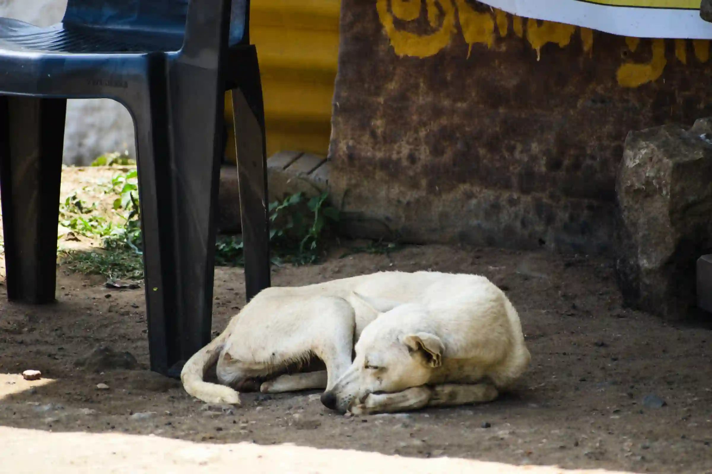

The Weight We Leave Behind
The law of conservation of momentum says that in an isolated system, the total momentum remains constant. Momentum can be transferred from one object to another, but the total momentum of the system remains unchanged. That evening at Palamalai, I realised that a similar logic could apply to life too.
I am from a rural part of Coimbatore, and near my place stands Palamalai, a serene mountain temple dedicated to Sri Swami Aranganathar. Hundreds of people visit the temple on important days and festivals, carrying their worries and seeking relief through prayer.
I visit Palamalai for a different reason. I am someone who believes in God, but I am not a person who spends much time in worship. Still, this place has always been special to me for a different reason. Tucked away in the mountains, it offers a beautiful panoramic view, strong winds, and, more importantly, solitude. As a photographer and a rider, it became my getaway. Whenever I felt low or demotivated, I would take my bike or car and ride there, sit somewhere facing the wind, and simply get lost for a while. In its own way, that place lifted the weight from my chest.
But one quiet evening, I happened to witness something that made me look at Palamalai differently.
I was sitting there, looking at nothing in particular, when I heard an Omni van approaching the temple. It came close to where I was sitting, stopped, and its sliding door opened. A dog inside suddenly jumped out with full force and began exploring the place with what looked like pure joy.
Then, almost immediately, the door closed.
The van reversed, turned around, and sped away.
Before the dog could understand what had happened, the van was already far away. No matter how fast it ran, it could not catch up.
The entire thing happened within seconds. I didn't even have enough time to reach for my camera.
The dog eventually stopped chasing the van. It came back, climbed onto the platform near me, and sat there quietly, looking in the direction the van had disappeared.
I cannot say what was going through its mind. But watching it sit there, I could not help but feel that something had changed. A place that had always taken away my worries had just become the place where another living being had been left with a completely different kind of weight.
That was when I started noticing the dogs around the temple.
There were many of them. Palamalai is far away from any major settlement, yet the dogs there had access to food. On special occasions, devotees are served free meals, and the dogs often survive on the food that remains. Some devotees feed them directly, and there is also a small mountain village nearby.
They were not necessarily hungry. But I began to wonder if they were lonely.
Until then, I had always looked at these dogs differently. Whenever I walked around the temple, they would come in between, follow people around, or suddenly appear beside me. I have always been a little afraid of dogs, so I mostly saw them as a nuisance or a menace.
But after that evening, I started seeing them differently.
Perhaps some of them had stories similar to that dog.
They had food. They had other dogs to play with. They had a place to stay.
But perhaps they had also lost the one thing they could never replace—their family.
They had been abandoned.
And I began to understand that abandonment must hurt, even if you cannot put that pain into words.
"Palamalai had always been a sanctuary of peace for me. But that evening, I realized that the same place could hold an entirely different experience for someone else. A place that lifted the weight from my chest could also be carrying the weight of another creature's loneliness."
My view of the dogs changed that day. And, in a strange way, so did my view of Palamalai.
I still go there whenever I need to get away. I still sit in the same winds and lose myself in the mountains. But now, every once in a while, I carry something with me for them too.
A few biscuits.
At least that's what I can do.



